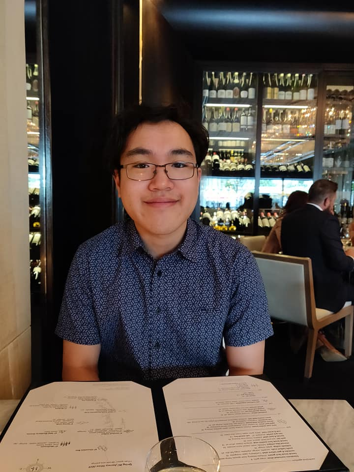

About Me

My name is Kelly Jiang. I am an amateur web developer currently residing in Evanston, Illinois.
I was born in Manhattan, Kansas and lived there for ten years before moving to Lubbock, Texas. My time
in small towns gave me an appreciation for nature, and for the value of peace and quiet.
I graduated from Northwestern University with a B.A. in math in 2019. Both the learning and the teaching of
mathematics hold a special place in my heart. I believe that abstract thinking can be an exercise in creativity
and artistry. I hope that web development will offer me a fulfilling career with room for creative freedom.
I am always looking for new ways to challenge myself.
My current hobbies include rock climbing, biking, video gaming, and playing chess. Some games I'm currently
playing include Red Dead Redemption 2, Return of the Obra Dinn, and Hearthstone. I also consider myself to be
an avid reader. A few of my favorite books are The Brothers Karamazov, To the Lighthouse, and
Mother Night. I'm always open to new recommendations.
I am the proud owner of two rats! Their instagram can be found at
@rattieswithsnackies
You can reach me through email at kllyjiang@gmail.com, or by phone at (806) 239-6808. You can also send me a
message through the contact page of this website.